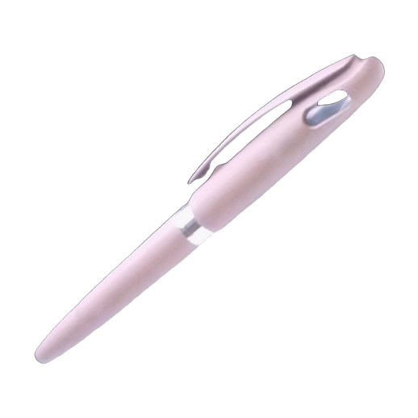
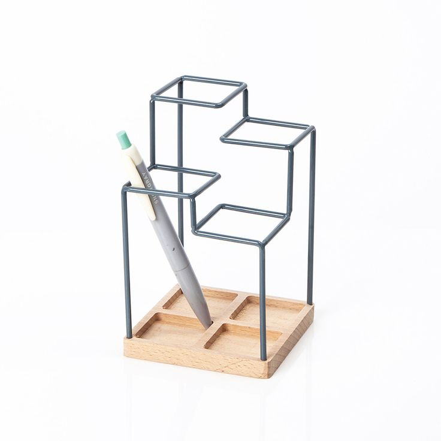
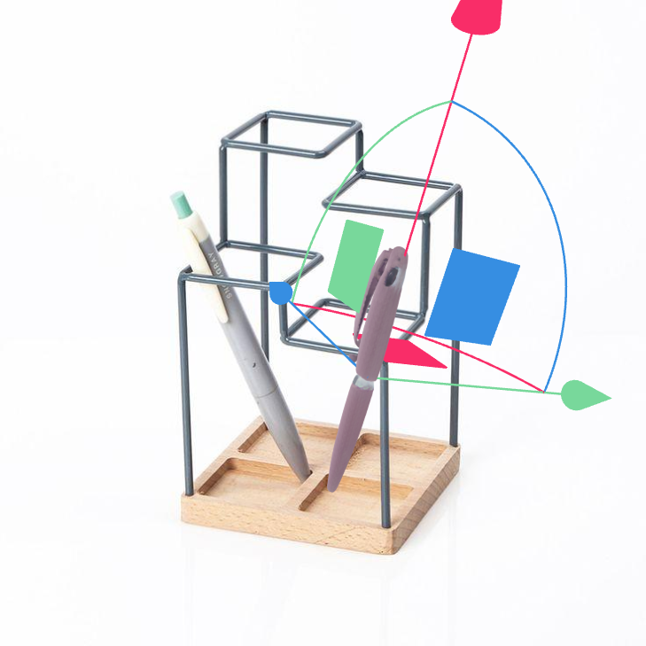
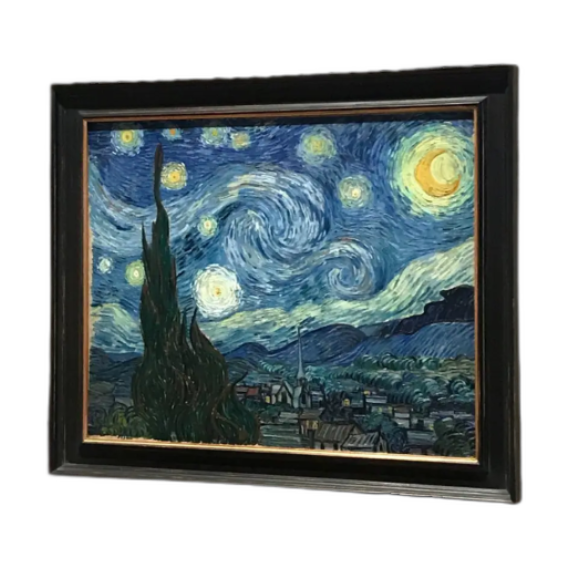
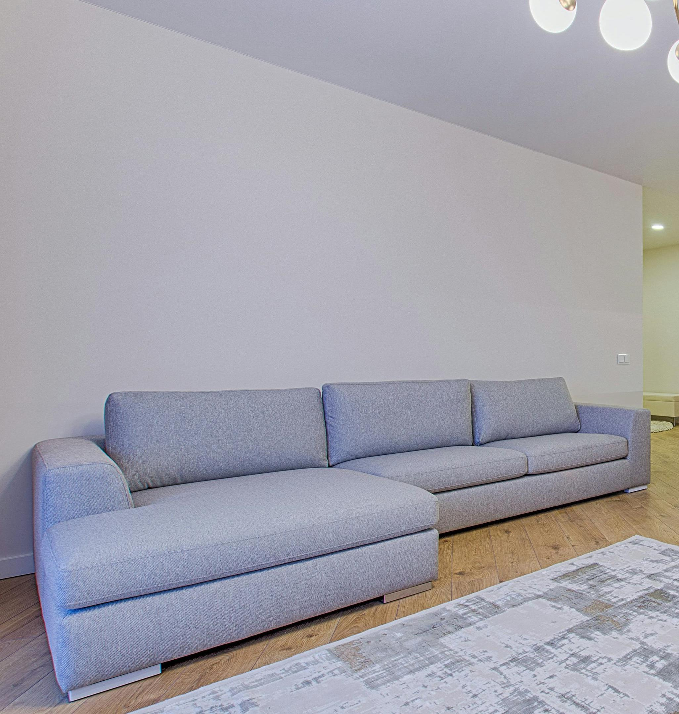
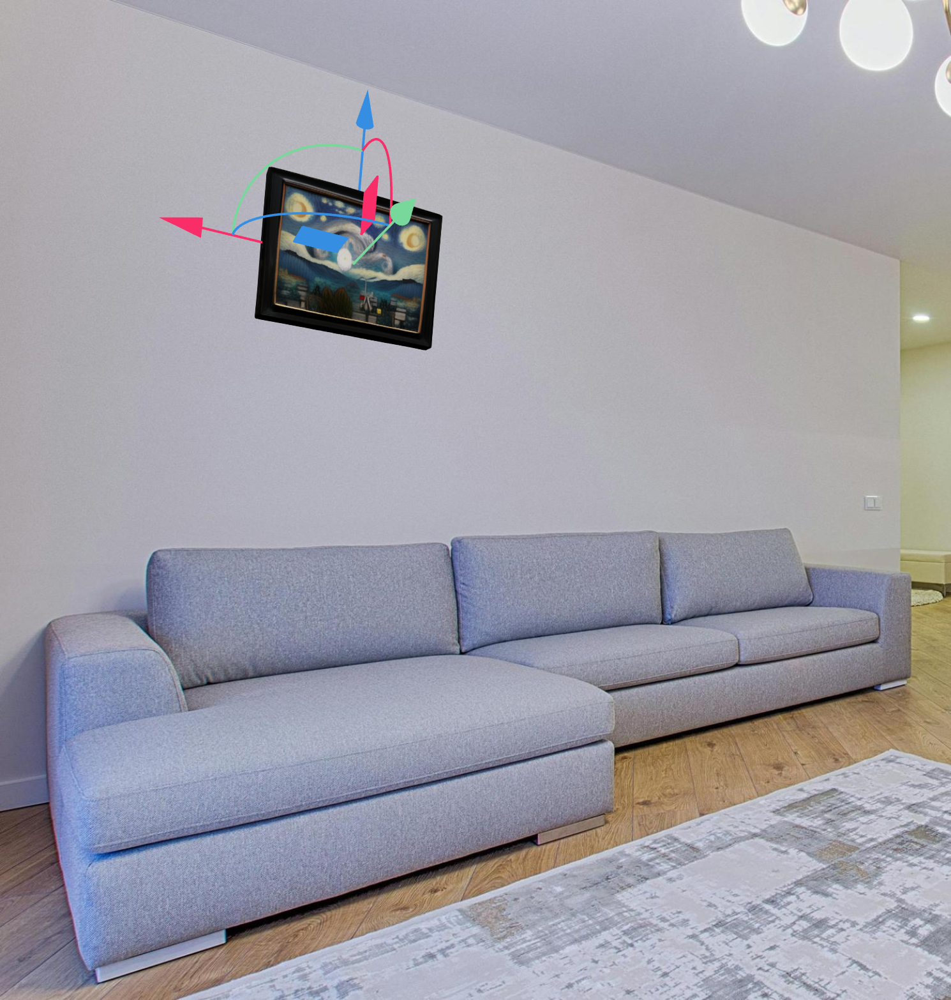
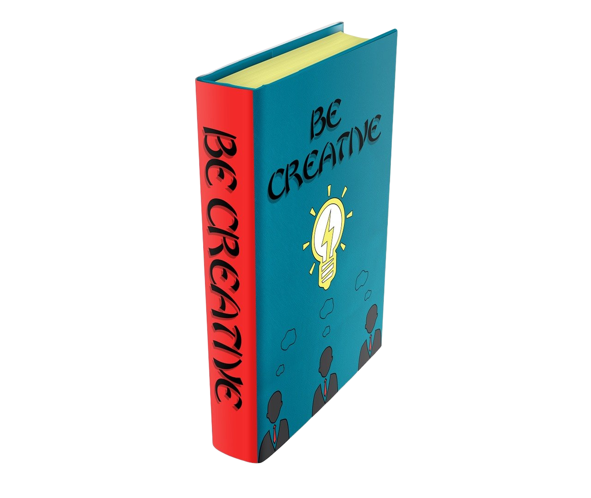
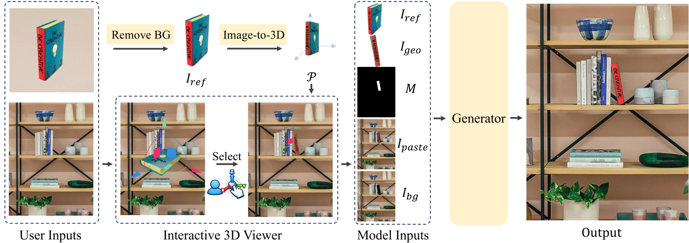
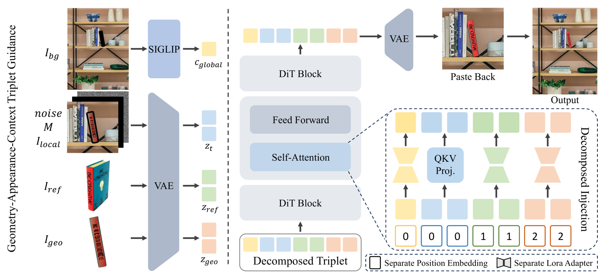

DIRECT enables pose-controllable object insertion with explicit geometric guidance from a reconstructed 3D proxy, while using decomposed injection to preserve reference appearance and integrate the object realistically into the scene.
Examples

object
background
3D proxy with background
object
background
3D proxy with background result
result

objectAbstract
Object insertion aims to seamlessly composite a reference object into a specified region of a background image. Recent diffusion-based methods achieve high visual quality but formulate insertion as a simple 2D inpainting task, providing no explicit control over the object's 3D pose and limiting their practical applicability. We propose DIRECT (Decomposed Injection for REference Composition and Target-integration), a novel framework that integrates interactive pose manipulation with high-fidelity 2D image synthesis to enable pose-controllable object insertion. Our method decomposes the insertion conditions into three complementary components: appearance guidance capturing visual details from the reference object, geometry guidance derived from the user-adjusted 3D proxy, and context guidance from the target background. By injecting them through separate pathways, DIRECT avoids feature entanglement and simultaneously preserves reference appearance, follows the user-specified pose, and adapts the object to the target scene. We also introduce an automated data construction pipeline to improve the diversity and quality of training data. Experiments show that DIRECT outperforms previous methods in both geometric controllability and visual quality.
Framework

Given a reference object image and a background image, DIRECT lifts the object into an interactive 3D proxy, allowing users to directly adjust its pose in the target scene. The adjusted proxy is rendered as geometry guidance, and our generator uses it to synthesize a realistic insertion result that follows the user-specified pose.
Architecture

Our generator decomposes the conditions into a visual triplet: geometry guidance from the rendered proxy, appearance guidance from the reference image, and context guidance from the background. With our Decomposed Injection Strategy, these signals are injected through separate pathways to preserve reference identity, follow the specified pose, and produce realistic scene integration.